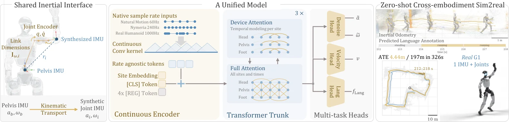
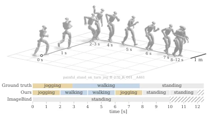
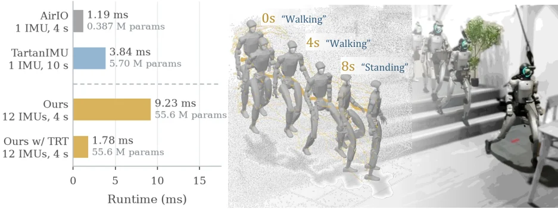
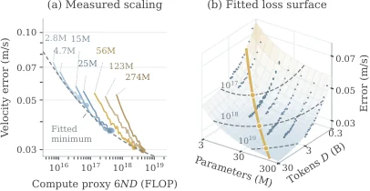

统一的惯性编码器：人类与人形机器人运动的共享表征
A Unified Inertial Encoder for Human and Humanoid Motion
关键不是“更大的 IMU 模型”，而是把跨具身的对应关系放回解剖位置：12 个站点共享输入空间，运动学合成把 G1 的骨盆 IMU 搬运到对应连杆。联合人+重定向 G1 训练后，真机 AVE 0.099 m/s、ATE_GT 3.153 m（人形单训练 5.901 m），重定向 G1 AVE 0.024 m；未见 G1 类别的动作检索 R@1 53.8%，IMU2CLIP 为 17.3%。代价是真机 ATE_Pred 仍 11.50 m，说明姿态漂移是主要瓶颈。
AVE
ATE
R@1
latency
作者、单位与技术谱系 · Research context
作者与单位
研究脉络
- AirIO（Qiu et al., 2025）直接上游关系：AirIO 用体坐标系测量改善高速 UAV 的速度可观性；本篇沿用其“提升 IMU 特征可观性”的问题设定，并把输入扩展到多站点。[原文引用/说明]
- TartanIMU（Zhao et al., CVPR 2025）并行上游关系：跨平台 IMU 基础模型，用跨平台训练 + 微调/在线适应提升泛化；本篇用“共享接口 + 零样本”走另一条路线。[原文引用/说明]
- Nymeria 与 BONES-Seed数据基座关系：Nymeria 提供 300+ 小时真实人体 IMU 与语言标注，BONES-Seed 提供人体与重定向 G1 的配对运动，是本篇跨具身训练的数据来源。[原文引用/说明]
作者单位由论文首页统一列出（Amazon FAR、UC Berkeley、Stanford、CMU），原文未逐一标注每位作者对应单位，因此不把单位强行分配给个人；Yuheng Qiu 同时是 AirIO 作者，这条谱系有原文引用支持。
方法本质拆解 · What actually changed
是不是微调？
从头训练一个共享编码器，不是微调：20 个 epoch、4096 ms 窗口、batch 1024，矩阵参数用 Muon、其余用 AdamW，学习率均为 10⁻³，权重取 EMA 0.95。训练集是 Nymeria、Natural Motion、BONES-Seed 人体数据加 BONES-Seed 重定向 G1；真机 G1 轨迹完全留作零样本评测。
加了什么约束？
共享接口固定为 12 个解剖站点，并把所有信号旋转到 Xsens 坐标约定；G1 侧用骨盆 IMU + 关节状态 + URDF 做运动学合成，把重力、尺度、速度、采样率、时间抖动、噪声、振动与冲击作为随机化。语言侧用冻结 CLIP 文本嵌入做余弦对齐，窗口必须被单条标注完整覆盖才计入。
推理/后端做了什么？
单次前向：连续卷积编码 + 交替注意力 + 四个头，TensorRT 下 1.78 ms。没有滤波器、没有平滑、没有测试时优化；轨迹是把预测速度用真值或陀螺积分姿态旋转后直接积分，因此报告的是纯学习模型的开环能力。
方法本质是什么？
先用运动学把不同具身的传感器搬到“同一解剖位置”，让输入空间在物理上可比；再用连续时间卷积消除采样差异，用多任务头同时约束速度、去噪与语言语义，使共享表征既保留运动学量又保留动作类别。它没有做的是把估计器接进闭环滤波器，也没有显式建模接触与打滑。
输入骨盆 IMU + 关节状态（人体为可穿戴/虚拟 IMU）→ 运动学搬运到 12 个解剖站点并统一坐标 → 连续时间编码 + 站点/全局注意力 + 多任务头 → 零样本真机 AVE 0.099 m/s，但姿态漂移仍使 ATE_Pred 达 11.5 m。

桥接价值Bridge
桥接价值
这篇把“训练数据覆盖”与“现有控制器能做的动作”解耦：人形机器人的惯性里程计不必只从机器人自己的记录里学，人类大规模运动数据可以提供更广的速度与姿态分布。它的桥接点不是某个网络层，而是“解剖对应站点 + 运动学信号合成”这个接口，使得人和 G1 在同一输入空间里对齐。对我们的价值在于：如果要在腿足/人形平台上复用人类 IMU 数据，这篇给出了从骨盆 IMU 与关节状态生成虚拟站点信号的完整公式，以及一套把姿态误差与速度误差分开的评测协议。
方法与模块Method
方法摘要
输入是 12 个站点的带时间戳加速度与角速度：人体来自可穿戴 IMU 或运动学虚拟传感器，G1 由骨盆 IMU、关节位置/速度与 URDF 前向运动学合成，包含切向、向心、科里奥利与连杆相对加速度项，不需要世界位姿或根速度。所有信号先旋转到统一的 Xsens 坐标约定，再用分层连续卷积（B 样条时间权重）编码成固定时长 token，避免重采样伪影；Transformer 在站点内与全站点之间交替注意力，并用时间旋转编码。输出头分别预测站点速度、无重力加速度、干净角速度，[CLS] 通过余弦损失对齐冻结 CLIP ViT-L/14 文本嵌入。训练时对重力、尺度、速度、采样率、时间抖动、噪声、振动与冲击做随机化。
可迁移模块
第一，运动学传输公式可以直接搬到我们的多 IMU 平台：只要有力学模型与关节状态，就能把基准 IMU 搬运到任意连杆，生成密集虚拟观测。第二，连续时间 tokenization 对混合采样率（100/200/400 Hz）与丢帧很实用，比统一插值更稳。第三，多任务头里的“无重力加速度 + 干净角速度”实际上是一个 IMU 去噪/去重力预训练任务，可以单独拿来做预训练。第四，评测协议把 ATE_GT（只衡量速度误差）与 ATE_Pred（陀螺积分姿态）分开，能避免把姿态漂移算到速度模型头上，这个拆分值得我们在自己的实验里照搬。

证据Evidence
关键证据与数字
五个数据集上 AVE 全部最低：Nymeria 0.026 m/s（AirIO+joints 0.060）、Natural Motion 0.049（0.080）、BONES-Seed 人体 0.031（AirIO 0.140）、重定向 G1 0.024（0.118）、真机 G1 0.099（0.190）。轨迹误差上，真机 ATE_GT 3.153 m，而只用重定向 G1 训练的人形专家是 5.901 m；重定向 G1 从 0.162 降到 0.101 m。运动–文本检索在“只在人类数据里出现过”的未见 G1 类别上 R@1 53.8%、mAP 11.3%，IMU2CLIP 为 17.3%/0.5%；但在 Nymeria 上 R@1 14.9% 略低于 IMU2CLIP 的 16.2%。运行时：12 个 IMU、200 Hz、4 秒窗口，在 L40S 上用 TensorRT 前向 1.78 ms，低于 5 ms 采样间隔。
边界与下一步Limits & Next Step
边界与风险
作者明确说硬件只覆盖一台人形平台，语言监督部分是合成且词表有限，姿态漂移仍是轨迹误差的主要来源：真机 ATE_GT 3.153 m，但换成陀螺积分姿态后 ATE_Pred 11.50 m。消融显示连续时间编码不可省——去掉后真机 ATE 从 3.153 恶化到 17.37 m；只用骨盆 IMU 是 8.114 m；数据只用 1/64 是 4.369 m。风险在于：12 站点合成假设 URDF 与关节状态准确，真实柔性、足端打滑与结构振动没有被运动学建模；随机化范围是启发式设定；没有把学习速度接进 ESKF/因子图，因此不知道与 IMU 预积分联合后是否仍占优。
下一步实验
建议先在我们的 IMU 数据上复现“运动学搬运 + 连续时间编码”这两件最便宜的事：固定同一段数据，比较原生单 IMU、虚拟多站点、以及加噪声随机化三种输入。然后把网络输出的速度当作 ESKF 的观测，显式给协方差，测试闭环后是否比纯 IMU 预积分漂移更小，而不是只看开环 ATE。第三，做采样率与时间抖动的交叉实验（100/200/400 Hz × 抖动 0/0.1/0.2），验证连续卷积的收益是否在低速率下更大。最后，用我们自己的平台重跑“只用平台数据 vs 加人类数据”的对照，确认跨具身增益不是 G1 特例。



